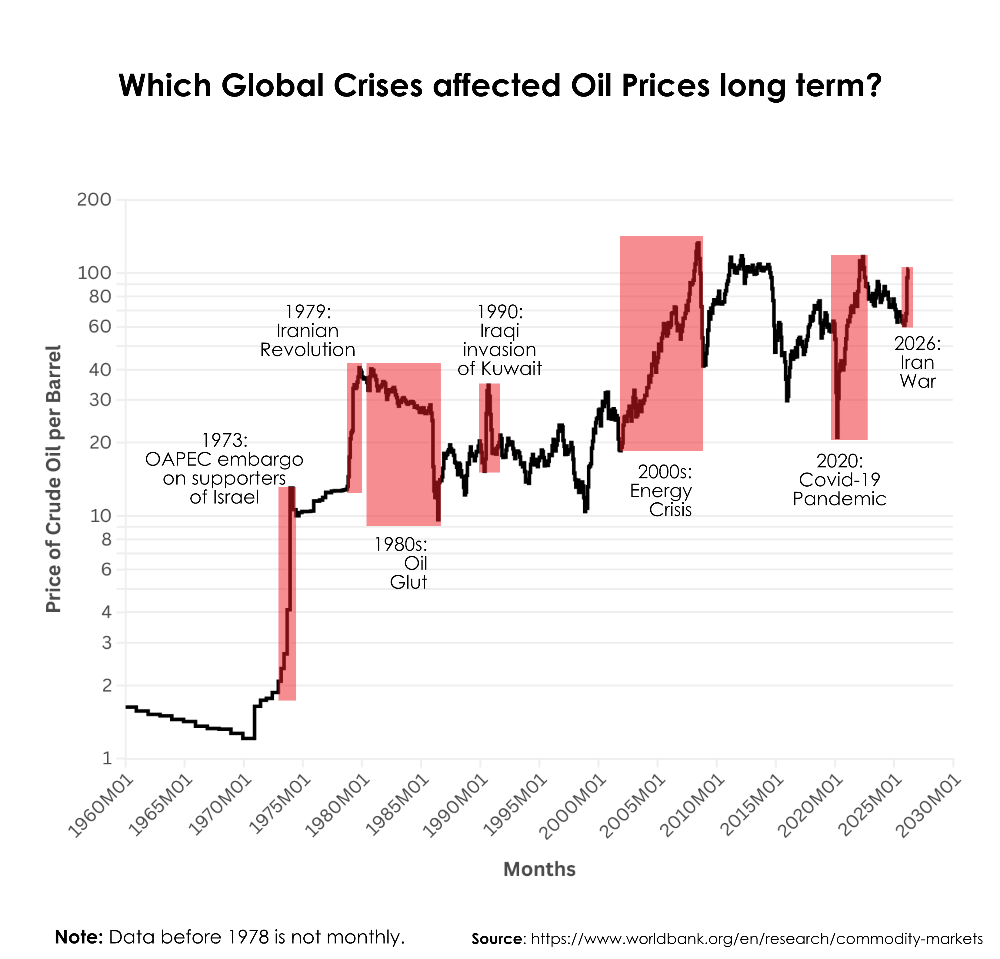
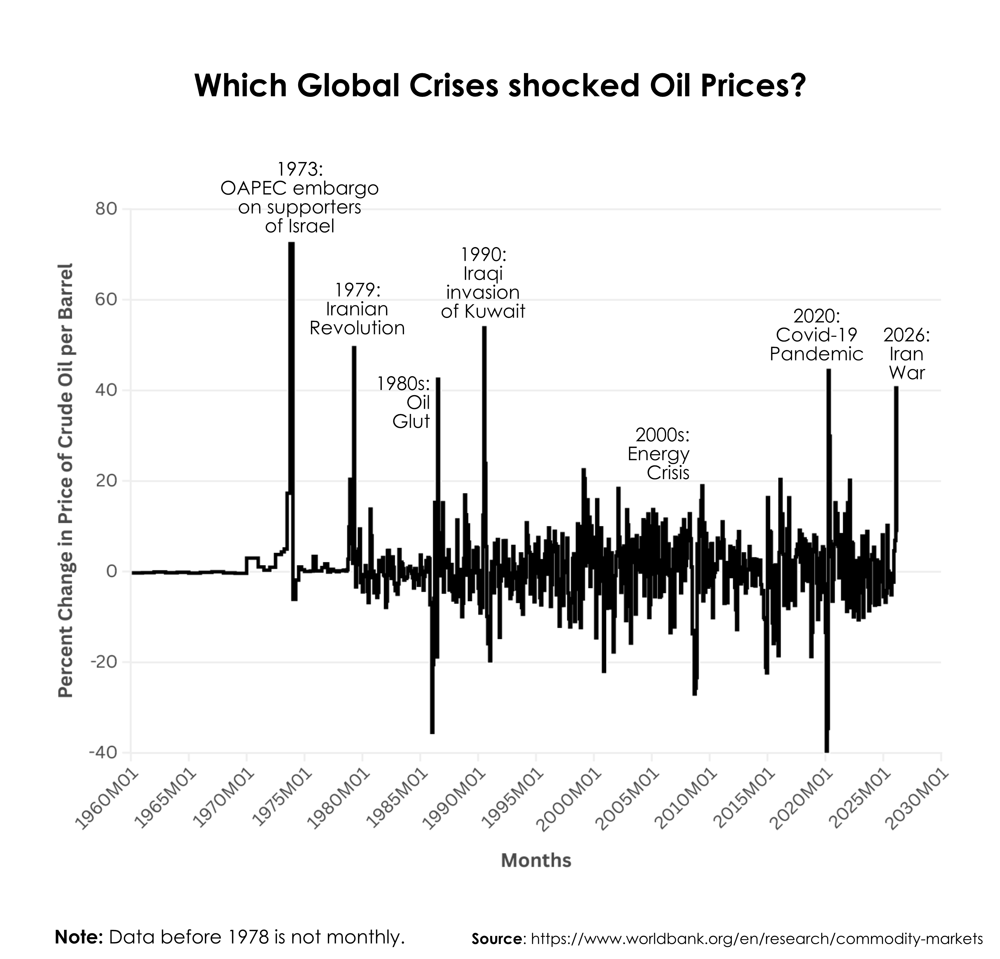
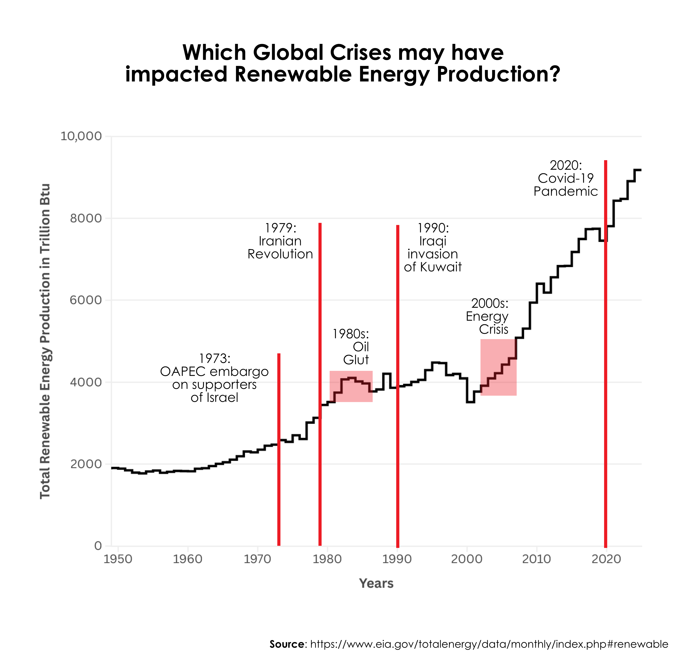

The nature of oil pricing is difficult to reliably predict over long periods, as it's driven by constant demand and an ever-changing political climate. There are noticeable spikes and dips in oil prices over the last 50 years, and determining their causes helps predict oil and gas prices. This analysis explores how the price of crude oil is influenced in times of crisis.
You can see the impact that crisis had on oil prices during 1973, 1979, and 1990 having notable spikes. While crisis has notable impacts, not all of those are long lasting as the Iraqi invasion didn't have a long lasting impact when comparing it to other crisis the Iranian revolution. While other areas having a gradual increase like the 2000s energy crisis that plateaued around 2008.


Below you can see a clear increase in the usage of renewable energy within the last 25 years. The 2000s energy crisis had a large impact and was a primary reason to start relying more on renewable energy and slowly shift away from total reliance on oil. It's important to notice how renewable energy was on the rise in the early 1980 until the oil glut which lead to a mild reduction in renewable energy reliance.

M. Ayhan Kose and Carlos Arteta. Commodity Markets, 2026. Distributed by the World Bank Group. https://www.worldbank.org/en/research/commodity-markets
Total Energy. Monthly Energy Review, May 26, 2026. Distributed by US Energy Information Administration https://www.eia.gov/totalenergy/data/monthly/index.php#renewable